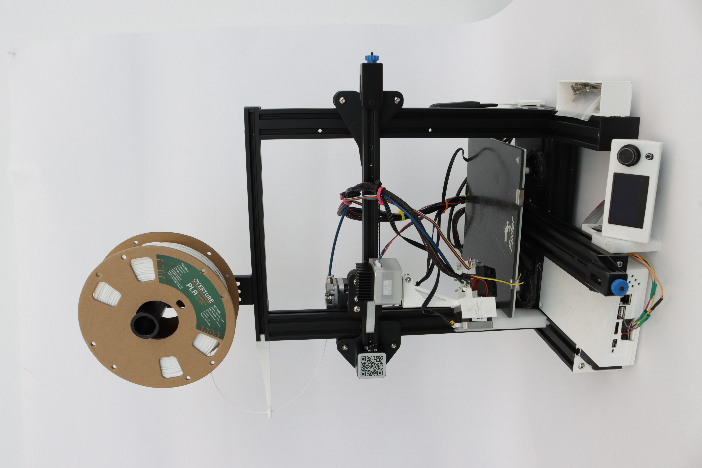
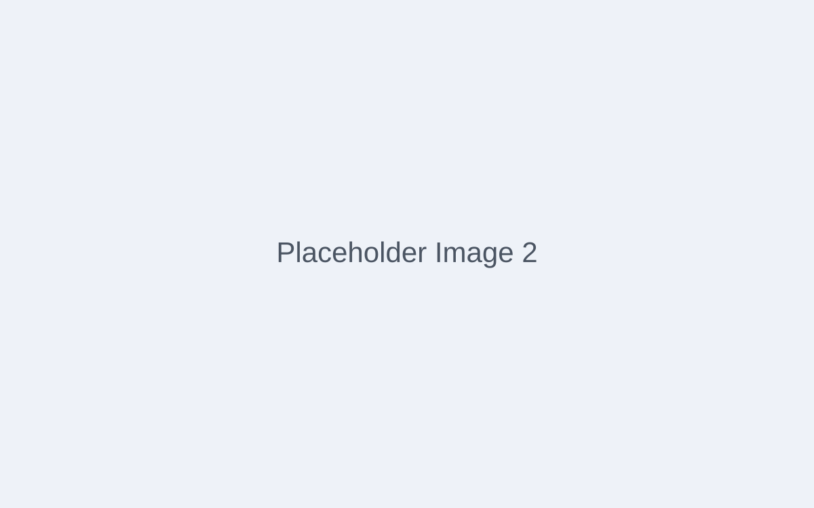
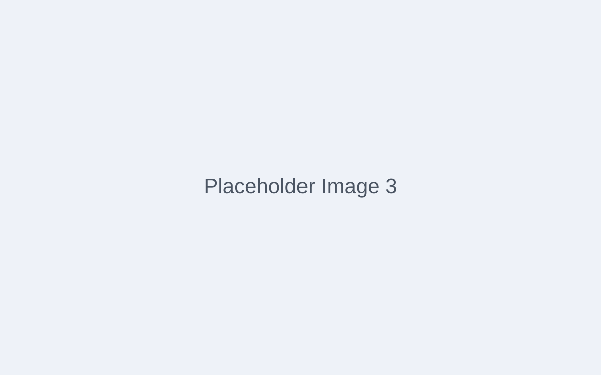
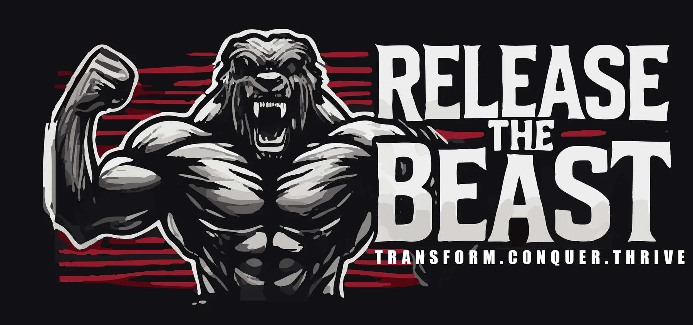

The M.A.R.T.I.A.N Bot
Autonomous 8-legged Mars construction robot with topology-optimized structure and 5-step DIG workflow. Capstone project.
Selected projects across robotics, sustainability, health-tech, computation, and business.
Autonomous 8-legged Mars construction robot with topology-optimized structure and 5-step DIG workflow. Capstone project.

Multi-axis toolpath strategies to cut support-material waste and improve additive-manufacturing efficiency.

Raspberry Pi sensor network and live dashboard keeping raised garden beds within safe growing conditions year‑round.

Fully offline, multi-modal AI platform with multi-GPU LLM inference, RAG memory, voice, and image generation.

User-centered ergonomic add-on designed for a lab technician with rheumatoid arthritis. Foot-pedal solution selected via comparative user testing.

Parametric Grasshopper/Rhino simulation of deployable electromagnetic shields for Mars radiation protection.

Data-driven seating analysis with camera observation, Revit modelling, and ADA-compliant redesign proposals for a university café.

Grasshopper/Rhino parametric simulation growing organic structures across 3D model surfaces with collision detection.

Two product explorations: a modular stackable system and a wearable hands-free carry unit.

Business feasibility study for a luxury vehicle conversion shop—market research, tiered pricing, and $2M startup plan.

Apparel brand identity and graphics system — logos, shirts, shorts, sports bras, and digital assets built for high-intensity motivation.